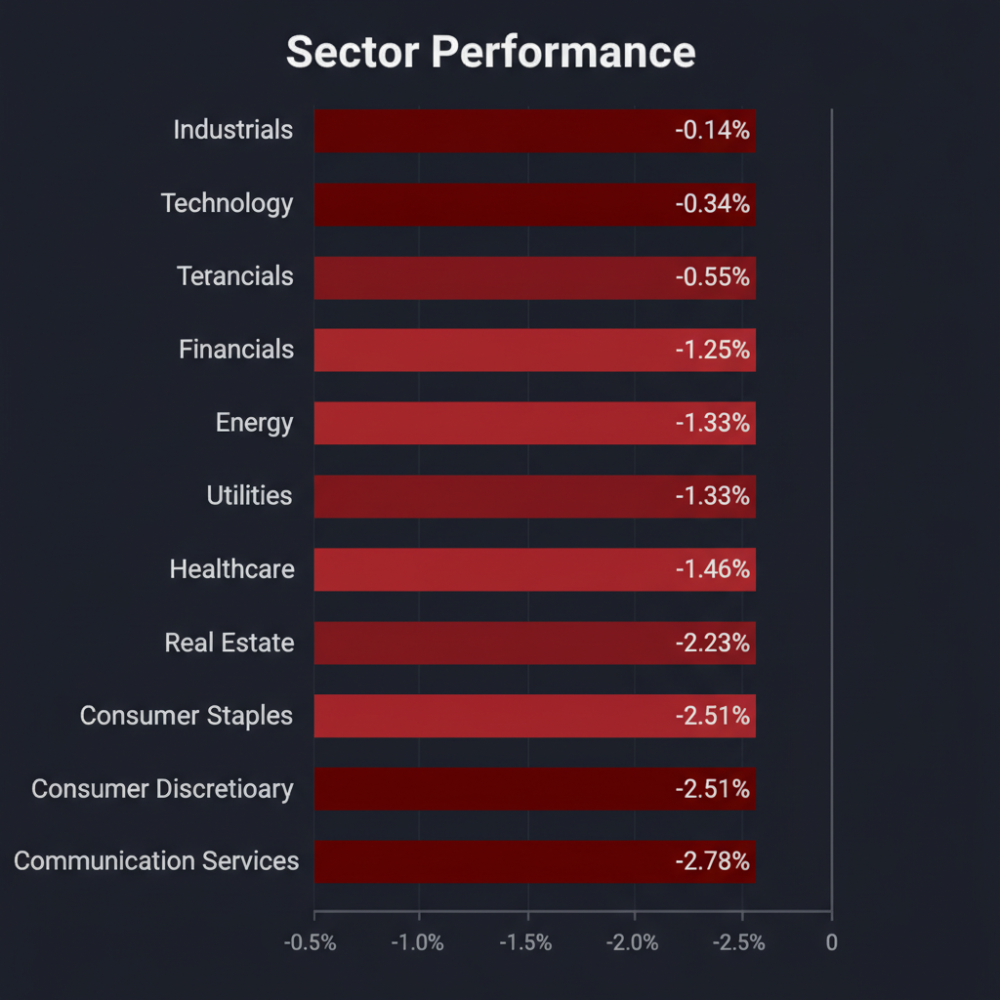
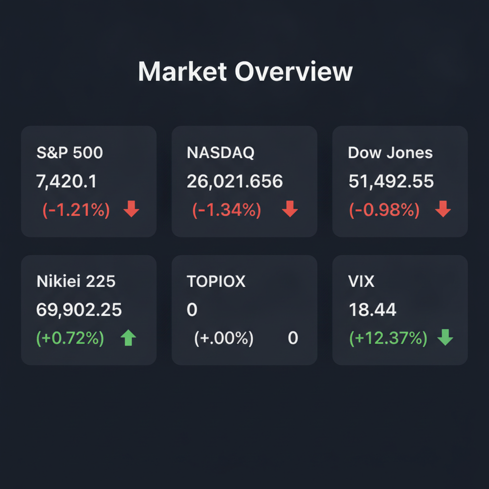

投資チームミーティングの議長として、各エージェントの合意および分析結果を統合した最終投資レポートを以下の通り提示します。
各エージェントがWeb調査結果を踏まえて独立に10段階評価した結果です。平均7以上=強気、4〜6.9=中立、4未満=弱気。
| 銘柄 | ファンダメンタルズアナリスト | テンバガーハンター | マクロエコノミスト | テクニカルストラテジスト | リスクマネージャー | 平均 | 判定 |
| MU | 9 AIメモリ需要で業績急拡大、ただし過熱感あり | 9 AIメモリ需要で圧倒的成長続く | 9 AIメモリ需要で業績急拡大、高値警戒 | 9 AIメモリ需要で急成長、決算通過後の押し目狙い | 9 AIメモリ需要で爆益、高PERはリスク |
9 | 強気 |
| DXPE | 7 MRO事業の安定性とFCF改善が評価できる | 8 MRO事業とFCF改善で成長期待 | 7 MRO事業の堅調さとFCF改善 | 7 MRO事業の安定性と成長性、株価上昇トレンド継続 | 7 MRO事業の安定性と成長期待、過熱感には注意 |
7.2 | 強気 |
| uniQure | 7 FDA方針転換で承認期待高まる | 6 FDA方針転換で急騰、資金繰りに懸念 | 8 FDA方針転換で承認期待大、高リスク・高リターン | 4 FDA好材料も赤字継続、リスク高い |
6.3 | 中立 | |
| Cimplifi | 5 非公開企業のため評価困難、AIサービスは有望 | 5 非公開企業のため評価不能 | 5 非公開企業のため評価不可 | 5 非公開企業のため評価不能 | 5 非公開企業のため評価不可 |
5 | 中立 |
| KMX | 2 利益率低下と再建不透明で警戒が必要 | 2 粗利低下で成長持続性なし | 2 利益率低下、経営再建に懸念 | 2 利益率低下と競合激化、経営再建に懸念 | 2 利益率低下、競合激化で構造的弱さ露呈 |
2 | 弱気 |
エージェントが推奨した中小型株について、Google検索で最新情報を調査した結果です。
DXPEに関する投資判断に必要な最新情報は以下の通りです。
同社の主な収益源は米国であり、2024年12月31日時点で米国・カナダを中心にUAE、インド、サウジアラビアに279拠点を展開しています。時価総額は約26億ドルです（2026年6月15日時点）。
2025年通期決算では、売上高が20.2億ドル（前年比12%増）、純利益が8,860万ドル（前年比26%増）、EPSが5.65ドルを記録し、アナリスト予想を上回りました。過去5年間で、売上高は年率16.8%の成長、EPSは年率61.7%の成長を達成しており、営業利益率も4.1%ポイント上昇しています。
KMX（CarMax）の投資判断に必要な最新情報を以下にまとめます。
1. 企業概要 KMXは、米国最大手の中古車小売業者です。事業は主に2つのセグメントで構成されています。一つは「CarMax販売事業」で、中古車の販売、購入、関連製品の提供、延長保証プランや車両修理などのサービスを含みます。もう一つは「CarMaxオートファイナンス（CAF）」で、小売車両を購入する顧客への融資を提供しています。卸売車両オークションの運営も手掛けています。
時価総額は2026年6月時点で約73.9億米ドルです。Investing.comの2026年6月3日時点では67.70億米ドルとされています。業界におけるポジションとしては、米国で最大の中古車小売業者です。
2. 直近の業績・決算情報 KMXは2026年6月17日に2027会計年度第1四半期（5月31日締め）の決算を発表しました。
* 売上高: 80億ドル（前年同期比6.2%増）。アナリスト予想の73.9億ドルから74.19億ドルを上回りました。 * 1株当たり利益（EPS）: 1.31ドル（希薄化後）。アナリスト予想の0.96ドルを大幅に上回りました。しかし、前年同期の1.38ドルからは減少しています。 * 純利益: 1億8560万ドル（前年同期の2億1040万ドルから減少）。 * 中古車小売販売台数: わずかに増加。既存店ベースの中古車販売台数は0.8%減少しましたが、これは前四半期の1.9%減から改善が見られました。 * 卸売車両台数: 8.4%増加。 * 小売中古車1台当たりの粗利益: 2,177ドルで、前年の過去最高水準から230ドル減少しました。これは販売動向を改善するための価格調整を反映したものです。 * 販管費（SG&A）: 3.7%減の6億3520万ドルに縮小し、1台当たりのSG&Aは118ドル改善しました。
3. 最新ニュース・材料 * 2026年6月17日: KMXは2027年度第1四半期の決算を発表し、EPSと売上高が市場予想を上回りました。キース・バーCEOは、ユニットおよび利益成長を目指す4本柱の新たな成長戦略を発表しました。 * 2026年6月17日: 決算発表後、株価は時間外取引で一時上昇しましたが、取引時間中には約7.99%下落しました。これは、売上高が予想を上回ったにもかかわらず、経営再建策の持続性や前年比での1株利益の減少に対する懸念が背景にあると見られています。 * 2026年6月16日: Truist Securitiesは、販売見通しの改善を受けてKMXの目標株価を37ドルから47ドルに引き上げ、「ホールド」の投資判断を維持しました。 * 2026年6月17日: BofA証券は、目標株価を40ドルから45ドルに引き上げましたが、Carvanaなどの競合他社からの市場シェア圧力継続を理由に「アンダーパフォーム」の投資判断を維持しました。 * 2026年6月17日: バークレイズは、KMXの業績の一貫性に関する懸念を理由に、「アンダーウェイト」の格付けと31ドルの目標株価を維持しました。
4. アナリスト評価・目標株価 直近のアナリスト評価は以下の通りです。 * Truist Securities: 「ホールド」、目標株価47ドル（2026年6月16日付）。 * BofA証券: 「アンダーパフォーム」、目標株価45ドル（2026年6月17日付）。 * バークレイズ: 「アンダーウェイト」、目標株価31ドル（2026年6月17日付）。
過去3ヶ月のアナリスト13名による12ヶ月の目標株価平均は39.18ドルで、最高値は47.00ドル、最低値は31.00ドルです。Robinhoodによると、21件のアナリスト評価のうち、「買い」が14.3%、「ホールド」が61.9%、「売り」が23.8%となっています。
5. リスク要因 * 競合: Carvanaなどのオンライン中古車販売業者との激しい競争に直面しており、市場シェアの圧力が継続しています。Carvanaは過去12ヶ月で目覚ましい売上高成長を達成しています。 * 収益性: 販売促進のための価格設定戦略により、小売中古車1台当たりの粗利益が減少傾向にあり、粗利益率の持続性に対する懸念があります。同社の売上総利益率は12%と低水準です。 * 経済環境: 依然として厳しい市場環境にあります。 * 経営再建の持続性: 新しい成長戦略が発表されましたが、経営再建策の持続性に対する市場の懸念が示されています。
6. 株価の最近の動き 2027年度第1四半期決算発表（2026年6月17日）後、株価は一時的に上昇しましたが、その後、取引時間中に大幅に下落しました（約7.99%）。これは、予想を上回る売上高にもかかわらず、1株利益が前年を下回ったことや、既存店中古車粗利益が4四半期連続で減少したことなど、経営再建の持続性に対する懸念が背景にあると見られています。
しかし、直近1ヶ月間では約40%上昇しており、年初来では35%、過去6ヶ月間では28.5%の上昇を記録しています。2026年6月16日時点の株価は51.82ドルから52.21ドル前後で推移しています。52週高値は71.99ドル、52週安値は30.26ドルです。
マイクロン・テクノロジー（MU）に関する投資判断に必要な最新情報は以下の通りです。
1. 企業概要 マイクロン・テクノロジーは、アメリカ合衆国アイダホ州ボイシに本社を置く多国籍半導体製造企業です。高性能DRAM、NAND、NORメモリおよびストレージ製品を「Micron」および「Crucial」ブランドで提供しており、メモリおよびストレージソリューションのリーダーとして知られています。 サムスン、SKハイニックスと並ぶ世界三大半導体メモリメーカーの一角を占めています。 時価総額は約1.21兆ドル（2026年6月17日時点）です。 2025年度の年間売上高は374億ドルで、61,000件以上の特許を保有し、世界30以上の主要都市で事業を展開、約55,000人の従業員を擁しています。
2. 直近の業績・決算情報 次回の四半期決算発表は2026年6月24日に予定されています（2026年度第3四半期）。
2026年度第2四半期（2026年2月期）実績: * 売上高：238.6億ドル（前年同期比196%増）。 * GAAPベース売上総利益率：74.4%（前期の36.8%から上昇）。 * GAAPベース営業利益：161.35億ドル（前年同期比9.1倍）、営業利益率67.6%。 * 1株当たり利益（EPS）：12.20ドル（予想8.79ドルを大幅に上回る）。 * フリーキャッシュフロー：69億ドルと過去最高を記録。 * 配当金は30%増額されました。
2026年度第3四半期（2026年5月期）見通し（会社ガイダンス）: * 売上高：335億ドル（中間値）。 * 売上総利益率：約81%。 * 1株当たり利益（EPS）：19.15ドル（中間値）。 * この売上高見通しは、四半期ベースで過去のどの通期売上高をも上回る水準です。
3. 最新ニュース・材料（直近1-2週間） * AIメモリ需要の急増: マイクロンは、AIデータセンター向けの高帯域幅メモリ（HBM）の需要急増の最大の受益者の一つです。 2026年分のHBM生産能力はすでに長期固定価格契約で完売しています。 NVIDIAのVera Rubin HBM4プラットフォームの認定サプライヤーには、サムスン、SKハイニックス、マイクロンが含まれていますが、マイクロンは3番目に大きな割り当てです。 ゴールドマン・サックスは、2026年にはDRAM、NAND、HBMでそれぞれ4.9%、4.2%、5.1%の深刻な供給不足を予測しています。 * アナリスト評価の引き上げ: 2026年6月17日までの1週間で、少なくとも6つの銀行がマイクロンの目標株価を大幅に引き上げました。 ドイツ銀行はDRAMの強い需要を背景に目標株価を1,000ドルから1,500ドルに引き上げ、カンター・フィッツジェラルドとTDカウエンも1,500ドルに設定しました。大和証券は1,600ドル、ウルフ・リサーチは1,250ドル、アレセイア・キャピタルは1,600ドルとしています。 * 株価の動き: 2026年6月17日の取引では3.12%上昇して取引を開始しました。 しかし、6月15日には半導体セクター全体の利益確定売りやマクロ経済の懸念（ブロードコムのAI収益ガイダンス未達、FRBの利上げ懸念）から1.43%下落しました。 6月15日には株価が11%急騰し、52週高値の1,097.47ドルを記録、時価総額1兆ドルを記録的な速さで達成しました。 年初来（2026年6月15日時点）で約245%上昇しています。 * その他のニュース: マイクロンは2026年6月24日に2026年度第3四半期決算を発表する予定です。 AIおよびクラウドインフラのベテランであるアレクシス・ブラック・ビョルリン博士を取締役会に迎え、COMPUTEX 2026ではAIに最適化されたメモリ・ストレージ製品ラインナップを拡充しました。 ニューヨークに1,000億ドル規模の製造施設を建設し、台湾のPSMC P5工場を18億ドルで買収するなど、大規模な製造投資を進めています。 CHIPS法に基づく64億ドルの資金提供を受けています。 アマゾンは2033年までの65億ドル規模の購入契約を締結しています。
4. アナリスト評価・目標株価 2026年6月17日時点のアナリストコンセンサスは「強気買い（Strong Buy）」です。 内訳は「強気買い」30人、「買い」9人、「中立」4人、「強気売り」1人です。 アナリストの平均目標株価は866.6ドルで、現在の株価から15.1%下落する可能性を示唆しています。 しかし、一部のアナリストは大幅に高い目標株価を設定しており、中間値の目標株価は約1,670ドルです。 ドイツ銀行は1,500ドル、カンター・フィッツジェラルドは1,500ドル、大和証券は1,600ドル、アレセイア・キャピタルは1,600ドルなどとしています。 一部のアナリストは、2027年暦年のEPSを160ドル、粗利益率は当面の間80%以上を維持すると予測しています。
5. リスク要因 * メモリ業界の循環性: メモリチップ業界は歴史的に景気循環の影響を受けやすく、現在の好況がどこまで持続するかについては警戒感があります。2028年のピーク後、2029年には急激な減益を予測するモデルもあります。 * 競合: HBM分野ではサムスンやSKハイニックスとの激しい競争に直面しており、NVIDIAのHBM4プラットフォームにおけるマイクロンの割り当ては3番目であり、競合他社と比較してHBM収益の成長ペースが制限される可能性があります。 * 地政学的・規制リスク: 中東情勢や関税措置などの地政学的リスク、およびセクター全体での売り圧力が株価に影響を与える可能性があります。 * 過大評価への懸念: 株価の急速な上昇と、平均目標株価が現在の株価を下回る状況から、一部ではバリュエーションに関する懸念が示されています。 * 大規模な設備投資: 戦略的な大規模設備投資（ファブ建設など）は、もし現在の例外的な価格と稼働率の環境が予想よりも早く正常化した場合、足かせとなるリスクを抱えています。 * 顧客集中リスク: メモリ市場において、主要なテクノロジー企業への顧客集中リスクが指摘されています。
6. 株価の最近の動き マイクロンの株価は非常に強い上昇トレンドにあります。2026年6月17日時点の株価は1,097.78ドル前後です。 6月17日には3.12%高で取引を開始しました。 6月15日には11%急騰し、52週高値の1,097.47ドルを記録し、わずか48日間で時価総額5,000億ドルから1兆ドルに達するという記録的な速さで成長しました。 しかし、同じく6月15日には半導体セクター全体の利益確定売りにより1.43%下落する場面も見られました。 6月24日に予定されている2026年度第3四半期決算発表では、オプションデータによると株価が11%変動する可能性があります。
Cimplifiに関する最新情報を以下の通り簡潔にまとめます。
Cimplifi 投資判断に必要な最新情報
1. 企業概要（事業内容、時価総額、業界でのポジション） Cimplifiは、eDiscoveryと契約分析を専門とする統合的なリーガルサービスプロバイダーです。法律事務所、企業の法務部門、公共部門を顧客とし、テクノロジーと専門知識を活用して法務業務を簡素化しています。AI、独自のツール、自動化されたワークフローを統合したプラットフォームを提供し、リスク管理、コスト削減、効率向上を支援しています。 同社は1997年に設立され、2011年にSystem One社に買収されて以来、非公開企業です。従業員数は約172〜187名です。同社はリーガルサービス業界において「リーディングプロバイダー」と位置づけられており、主要な競合他社にはRocket Lawyer、Lawhive、Zolvit、Trustpoint.Oneなどが挙げられます。
2. 直近の業績・決算情報（売上、利益、成長率） Cimplifiは非公開企業であるため、詳細な売上、利益、成長率などの財務情報は公表されていません。ただし、ある情報源では「10億ドルを超える収益規模」で事業を展開していると記述されており、これにより同社が相当な規模で事業を行っていることが示唆されていますが、これは具体的な財務報告に基づくものではありません。
3. 最新ニュース・材料（直近1-2週間の重要なニュース） * AIコンサルティングサービスの拡大 (2026年6月17日付): Cimplifiは、AIコンサルティング、アドバイザリー、リーガルエンジニアリングサービスの拡大を発表しました。これにより、顧客がAIの実験段階から実用段階へと移行し、eDiscoveryと契約分析のワークフロー全体でAIを運用できるよう支援することを目指しています。 * Relativityとの協業によるAIレビューワークフローの検証 (2026年6月13日付): Redgrave LLPとCimplifiは、Relativityの生成AIレビューワークフローを従来のActive Learningと比較する研究を実施し、複雑な規制対象案件におけるAIのパフォーマンスを検証しました。 * 最高収益責任者（CRO）の任命 (2026年1月28日付): Michael Conner氏を最高収益責任者（CRO）に任命し、グローバルな収益戦略、市場開拓、営業統括、パートナーシップ強化、成長戦略を監督するとしています。
4. アナリスト評価・目標株価（あれば） Cimplifiは非公開企業であるため、証券アナリストによる公式な評価や目標株価は存在しません。公開企業のCimpress NV (CMPR)のアナリスト評価が検索結果に混在していますが、これはCimplifiとは異なる企業です。
5. リスク要因（競合、規制、財務上の懸念） * 競合: Cimplifiは、Rocket Lawyer、Lawhive、Zolvit、Trustpoint.Oneなどの競合他社が存在するリーガルテクノロジーおよびサービス市場で事業を展開しています。 * 技術変化: AIの急速な進化は、同社のサービスにおいて機会となると同時に、常に最新技術を取り入れ、適応していく必要性というリスクも伴います。同社はAIを活用したソリューションを提供していますが、市場の技術トレンドに後れを取ることは競争上のリスクとなり得ます。 * 規制: eDiscoveryや契約管理といった法務関連サービスを提供するため、データプライバシー、セキュリティ、法的要件に関する規制の変更は、事業に影響を与える可能性があります。同社はISO 27001認証を取得しており、デフェンシブルなワークフローを重視しています。 * 財務上の懸念: 非公開企業であるため、具体的な財務上の懸念について公開情報はありません。
6. 株価の最近の動き（直近のトレンド） Cimplifiは非公開企業であるため、株式は一般に取引されておらず、株価やその動向に関する情報はありません。
uniQureに関する投資判断に必要な最新情報は以下の通りです。
過去3年間で、uniQureの1株当たり利益（EPS）は平均で年率8%増加しましたが、株価は年率1%しか上昇しておらず、収益成長に大きく遅れをとっています。